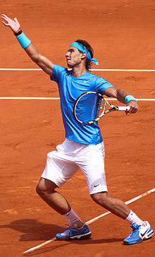
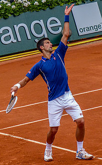

Players
Rafael Nadal :

Rafael "Rafa" Nadal Parera (Catalan: [rəf(ə)ˈɛl nəˈðal pəˈɾeɾə], Spanish: [rafaˈel naˈðal paˈɾeɾa];[2] born 3 June 1986) is a Spanish professional tennis player, currently ranked world No. 2 in men's singles tennis by the Association of Tennis Professionals (ATP).
Nadal has won 18 Grand Slam singles titles, the second most in history for a male player, as well as a record 35 ATP Tour Masters 1000 titles, 20 ATP Tour 500 titles, and the 2008 Olympic gold medal in singles. In addition, Nadal has held the world No. 1 ranking for a total of 196 weeks.[3] In majors, Nadal has won a record twelve French Open titles, three US Open titles, two Wimbledon titles, and one Australian Open title. Nadal has won 83 career titles overall, including a record 59 clay court titles. With 81 consecutive match wins on clay, Nadal holds the record for the longest single-surface win streak in the Open Era.
Nadal has won 18 Grand Slam singles titles, the second most in history for a male player, as well as a record 35 ATP Tour Masters 1000 titles, 20 ATP Tour 500 titles, and the 2008 Olympic gold medal in singles. In addition, Nadal has held the world No. 1 ranking for a total of 196 weeks.[3] In majors, Nadal has won a record twelve French Open titles, three US Open titles, two Wimbledon titles, and one Australian Open title. Nadal has won 83 career titles overall, including a record 59 clay court titles. With 81 consecutive match wins on clay, Nadal holds the record for the longest single-surface win streak in the Open Era.
Roger Federer :

Roger Federer (German pronunciation: [ˈrɔdʒər ˈfeːdərər]; born 8 August 1981) is a Swiss professional tennis player who is currently ranked world No. 3 in men's singles tennis by the Association of Tennis Professionals (ATP).
He is considered by many to be one of the greatest tennis players of all time.
He has won 20 Grand Slam singles titles—the most in history by a male player—and has held the world No. 1 spot in the ATP rankings for a record total of 310 weeks, including a record 237 consecutive weeks.
After turning professional in 1998, he was continuously ranked in the top ten from October 2002 to November 2016.
He is considered by many to be one of the greatest tennis players of all time.
He has won 20 Grand Slam singles titles—the most in history by a male player—and has held the world No. 1 spot in the ATP rankings for a record total of 310 weeks, including a record 237 consecutive weeks.
After turning professional in 1998, he was continuously ranked in the top ten from October 2002 to November 2016.
Novak Djokovic :

Novak Djokovic (Serbian: Новак Ђоковић, romanized: Novak Đoković, pronounced [nôʋaːk dʑôːkoʋitɕ] (About this soundlisten); born 22 May 1987) is a Serbian professional tennis player who is currently ranked world No. 1 in men's singles tennis by the Association of Tennis Professionals (ATP).
Djokovic has won 16 Grand Slam singles titles, five ATP Finals titles, 33 ATP Tour Masters 1000 titles, 12 ATP Tour 500 titles, and has held the No. 1 spot in the ATP rankings for over 260 weeks. In majors, he has won a record seven Australian Open titles, five Wimbledon titles, three US Open titles, and one French Open title. Following his victory at the 2016 French Open, he became the eighth player in history to achieve the Career Grand Slam and the third man to hold all four major titles at once, the first since Rod Laver in 1969 and the first ever to do so on three different surfaces. He is the first and only male player to have won all nine of the Masters 1000 tournaments.